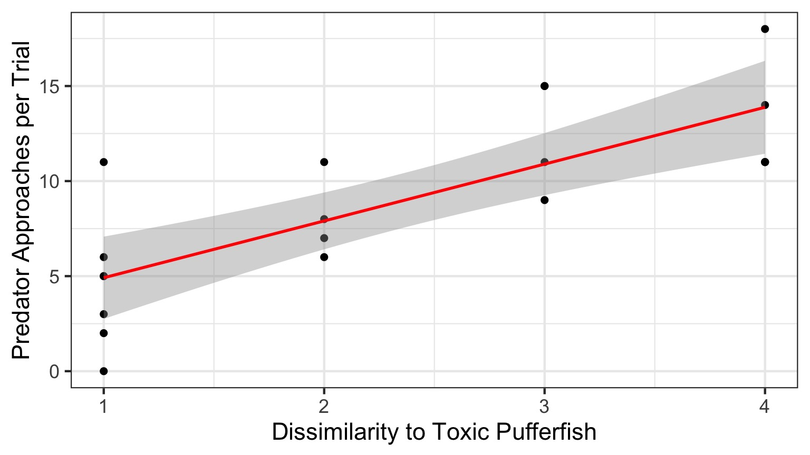
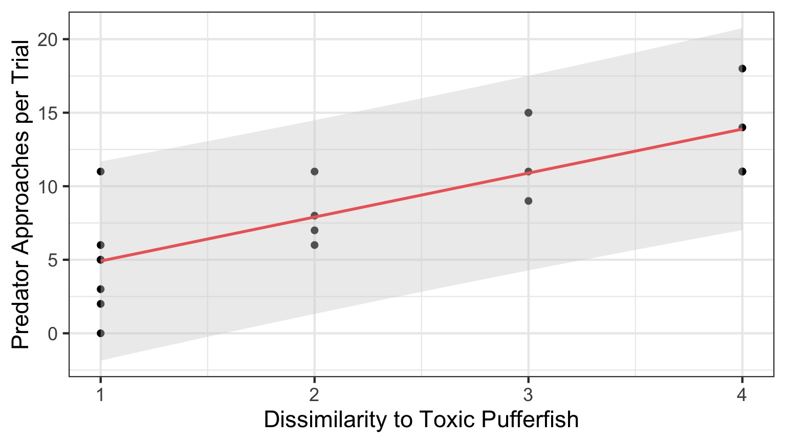
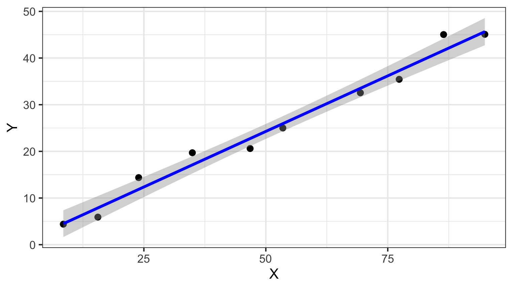

Evaluating Fit Linear Models

Outline
- Putting your model to the test
- Evaluating fit
- How you can get it wrong
- Power and Linear Regression
The Steps of Statistical Modeling
- What is your question?
- What model of the world matches your question?
- Build a test
- Evaluate test assumptions
- Evaluate test results
- Visualize
Our Puffer Example
- Pufferfish are toxic/harmful to predators
- Batesian mimics gain protection from predation - why?
- Evolved response to appearance?
- Researchers tested with mimics varying in toxic pufferfish resemblance

Question: Does Resembling a Pufferfish Reduce Predator Visits?

You have Fit a Valid Model. Now…
Does your model explain variation in the data?
Are your coefficients different from 0?
How much variation is retained by the model?
How confident can you be in model predictions?
Testing the Model
Ho = The model predicts no variation in the data.
Ha = The model predicts variation in the data.
To evaluate these hypotheses, we need to have a measure of variation explained by data versus error - the sums of squares!
\[SS_{Total} = SS_{Regression} + SS_{Error}\]
Sums of Squares of Error, Visually
Sums of Squares of Regression, Visually
Sums of Squares of Regression, Visually
Distance from \(\hat{y}\) to \(\bar{y}\)
Components of the Total Sums of Squares
\(SS_{R} = \sum(\hat{Y_{i}} - \bar{Y})^{2}\), df=1\(SS_{E} = \sum(Y_{i} - \hat{Y}_{i})^2\), df=n-2
To compare them, we need to correct for different DF. This is the Mean Square.
MS=SS/DF
e.g, \(MS_{E} = \frac{SS_{E}}{n-2}\)
The F Distribution and Ratios of Variances
\(F = \frac{MS_{R}}{MS_{E}}\) with DF=1,n-2
1-Tailed Test
F-Test and Pufferfish
| Df | Sum Sq | Mean Sq | F value | Pr(>F) | |
|---|---|---|---|---|---|
| resemblance | 1 | 255.1532 | 255.153152 | 27.37094 | 5.64e-05 |
| Residuals | 18 | 167.7968 | 9.322047 | NA | NA |
Testing the Coefficients
- F-Tests evaluate whether elements of the model contribute to variability in the data
- Are modeled predictors just noise?
- What’s the difference between a model with only an intercept and an intercept and slope?
- T-tests evaluate whether coefficients are different from 0
- Often, F and T agree - but not always
- T can be more sensitive with multiple predictors
Error in the Slope Estimate
\(\Large SE_{b} = \sqrt{\frac{MS_{E}}{SS_{X}}}\)
95% CI = \(b \pm t_{\alpha,df}SE_{b}\)
(~ 1.96 when N is large)
Assessing the Slope with a T-Test
\[\Large t_{b} = \frac{b - \beta_{0}}{SE_{b}}\]
DF=n-2
\(H_0: \beta_{0} = 0\), but we can test other hypotheses
Slope of Puffer Relationship
| Estimate | Std. Error | t value | Pr(>|t|) | |
|---|---|---|---|---|
| (Intercept) | 1.924694 | 1.5064163 | 1.277664 | 0.2176012 |
| resemblance | 2.989492 | 0.5714163 | 5.231724 | 0.0000564 |
We reject the hypothesis of no slope for resemblance, but fail to reject it for the intercept.
The Steps of Statistical Modeling
- What is your question?
- What model of the world matches your question?
- Build a test
- Evaluate test assumptions
- Evaluate test results
- Visualize
Visualize Your Fit
Outline
- Putting your model to the test
- Evaluating fit
- How you can get it wrong
- Power and Linear Regression
Evaluating Goodness of Fit
- You can have a strong slope, reject and F-test, and still have a meaningless result
- How much variation does your model explain in the data?
- What is the SD of your residual relative to the predicted values?
Coefficient of Determination
\(R^2\) = The porportion of Y is predicted by X.
\[R^2 = \frac{SS_{regression}}{SS_{total}}\]
\[= 1 - \frac{SS_{regression}}{SS_{error}}\]
Coefficient of Determination

How well does our line fit?

R2 = 0.603
Confidence Intervals Around Fit

Accomodates uncertainty (SE) in slope & intercept
Or, Fit Confidence Interval via Simulation using Coefficient SEs
- Values close to mean of X and Y are more certain.
- Uncertainty increases at edges.
Confidence Intervals Around Fit
\(\hat{y}\pm t_{n-2}s_{y}\sqrt{\frac{1}{n}+\frac{(x^{*}-x)^2}{(n-1)s_{x}^2}}\)\(s_{y} = \sqrt{\frac{SS_{E}}{n-2}}\)
Confidence Intervals Around Prediction
- Fit CIs show results of imprecise estimation of parameters
- Remember out model has an \(\epsilon_i\) in it, though!
- This means that there are other sources of variability that influence our response variable
- If we want to make a new prediction we need to incorporate the SD around the line - 3.0532028 in the puffer model
- Note: Extrapolation beyond range of data is bad practice
Coefficient of Determination

Confidence Intervals Around Prediction of a New Value
\(\hat{y}\pm t_{n-2}s_{y}\sqrt{1+\frac{1}{n}+\frac{(x^{*}-x)^2}{(n-1)s_{x}^2}}\)
Confidence of where the true value of \(\hat{y}\) lies
Large n converges on t distribution of fitted value.
Prediction Confidence Interval

Outline
- Putting your model to the test
- Evaluating fit
- How you can get it wrong
- Power and Linear Regression
The “Obese N”
High sample size can lead to a low p-value, even if no association exists
Sample Size and \(R^2\)
High sample size can decrease \(R^2\) if residual SD is high relative to slope
Little Variation in a Predictor = Low Power
But is this all there is to X?
But is that all there is?
How Should this Population be Sampled?
Same N, Higher Variation in X = More Power

Outline
- Putting your model to the test
- Evaluating fit
- How you can get it wrong
- Power and Linear Regression
What Influences Power of a Regression?
- Sample Size
- Effect Size (slope)
- Residual Variability
- Range of X Values
Power Analysis of Regression
- Yes, we can do this with equations
- But, come on, it’s better with simulation!
Relevant Info for Pufferfish
| term | estimate | std.error | statistic | p.value |
|---|---|---|---|---|
| (Intercept) | 1.924694 | 1.5064163 | 1.277664 | 0.2176012 |
| resemblance | 2.989492 | 0.5714163 | 5.231724 | 0.0000564 |
| r.squared | sigma | df.residual |
|---|---|---|
| 0.6032703 | 3.053203 | 18 |
| (DF Residual | = n-2) |
Let’s try different effect sizes: 0.5-5.5

Let’s try different Sigmas - 1 to 10

Let’s try different Sample Sizes Per Treatment - 2 to 10